ReLEAF is an optogenetic bioreactor system that is designed to provide on-demand protection against combined biotic and abiotic crop stresses through cell-free delivery of protective proteins.
Our target market is conventional smallholder farmers; a single stress event can potentially wipe out an entire season’s income with no recovery mechanism or backup plan. The team is aware that not a lot of money can be made out of it, but our vision is to have a social impact, and to empower farmers, which is why we chose this business model instead of a traditional one. Because our product includes GMOs, it will face legal hurdles.
ReLEAF is an optogenetic bioreactor system that is designed to provide on-demand protection against combined biotic and abiotic crop stresses through cell-free delivery of protective proteins. Our mission is to strengthen agricultural resilience by reducing crop losses while decreasing dependence on chemical interventions.
What we plan to do
Deploy a sealed bioreactor system at the farm level that continuously monitors soil and environmental conditions, detects when stress exceeds thresholds (heat, salinity, pathogens), produces and applies protective proteins directly to the crop. The system operates with minimal farmer intervention and integrates seamlessly into existing irrigation systems.
What the product does
The bioreactor houses engineered Bacillus subtilis that synthesizes three complementary protective proteins: late embryogenesis abundant protein LEA 14 (abiotic stress protection), 1-aminocyclopropane-1-carboxylate (ACC) deaminase, ACCD (ethylene reduction), and the broccoli plant elicitor peptide BoPep4 (salinity stress tolerance), triggered by green light signals when stress is detected. A hollow-fiber membrane ensures biological containment. The membrane is designed to retain bacteria while allowing cell-free output containing the protectants to pass through.
Mission statement: ReLEAF strengthens agricultural resilience by enabling on-demand protection against combined biotic and abiotic stresses through an optogenetic bioreactor, shifting from reactive chemical management to proactive, precision crop defense while reducing environmental contamination.
Vision: Every farmer is a biomanufacturer.
Our vision is to empower every farmer to have their small bacteria factory for producing biostimulants that help plants withstand environmental stresses. Through our bioreactor system, we wish to reduce long bioprocessing times and challenges, so that farmers can benefit from science at a faster rate than the present.
Climate stresses & vulnerability of agriculture
In a world of climate change, where seasons shift dramatically, temperatures fluctuate uncontrollably, soil salinity escalates, and fungal outbreaks intensify, humanity is forced to choose between immediate technological adaptation or multi-system crop failure in modern agriculture. Abiotic stresses, primarily heat and soil salinity, already cause an estimated 50% of worldwide crop yield losses annually, and climate change further exacerbates the severity and frequency of these issues (Bray et al., 2000; Mittler, 2002). For example, a 1 degree Celsius rise in average growing season temperatures reduces rice yield by 6.2% (Lyman et al., 2013). Additionally, over 20% of the world’s irrigated farmland is already significantly affected by salinity, with an additional 3 hectares becoming unproductive every minute (Zhao et al., 2017). Small farmers produce approximately 70-80% of the global food supply, a proportion that rises to over 80% of all consumed food in many developing sub-regions (Ricciardi et al., 2018). The focus on small farmers is critical because they represent the backbone of local food sovereignty. In East Asia, including Taiwan, where over 90% of agricultural holdings are small-scale family operations averaging less than 1 hectare, these small farmers directly supply more than 80% of domestic fresh vegetables and fruits (Ministry of Agriculture, 2024). In Taiwan’s Dahu area, which produces about 90% of the country’s strawberries, rising temperatures and typhoon rainfall have been linked to lower first-period yields (Chang, 2020), while year-round tomato production in the subtropical lowlands is challenged by summer heat and a growing risk of salinity stress, with yield strongly suppressed even by short-term mild salinity in a highly heat-tolerant cultivar (Liu et al., 2014). For all the smallholder farmers that make up over 500 million smallholder farms, these staggering numbers mean that a single stress event can potentially wipe out an entire season’s income with no recovery mechanism or backup plan.
One of the key issues that make this crisis particularly acute is the combination of heat and salinity stress. Under field conditions, these stresses occur repeatedly, compounding cellular damage in ways that can’t be triggered by either stress independently. At the same time, plants that are weakened by stress can become vulnerable to pathogens, meaning that even a miniscule instance of salinity or heat can initiate a disease outbreak. Current agricultural systems are not equipped to handle such crises - either current solutions damage soil health and burden farmers with costs they can’t afford, or these solutions are reactive and too slow, only able to be applied after visible damage has occurred. Chemical solutions such as fungicides (ex. mancozeb, azoxystrobin, or copper based sprays) and synthetic fertilizers remain the most accessible and affordable remedies, but they only further destroy the conditions of the already stressed plants because they are only broadly applied after visible and often irreversible crop damage has already occurred.
Product description
Product usage and function
Our current bioreactor US$2,280
Our field-deployable bioreactor is a sealed system containing engineered Bacillus subtilis that uses a hollow-fiber membrane filtration system to deliver protectant molecules directly on the vegetable crops. By restricting all living bacteria inside the device while allowing only the secreted protectants to exit, it automates crop defense without the need for manual spraying or application. The device functions with minimal farmer intervention, requiring only occasional maintenance checks or culture-cartridge replacement when the bacterial culture needs replenishment. It is fully automated by an Arduino-based control unit, a circulation pump, a temperature sensor, a salinity sensor and a green and red LED optogenetic control system. This integrated tech stack continuously monitors environmental conditions and automatically activates specific stress-response modules the moment predefined thresholds are breached.
Our minimum viable product
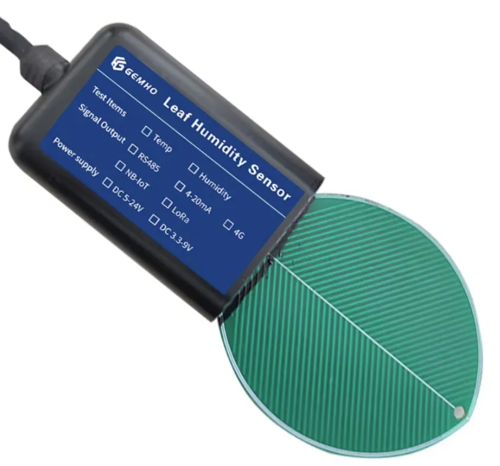
Leaf Humidity Sensor
Leaf humidity sensor US$125
The leaf humidity sensor sits on the leaves of crops and tells us the humidity of the leaf surface, with one type of crop using one sensor. The sensor then sends its readings to our artificial intelligence of things (AIoT) system, which uses the readings to forecast when the crop is going to need protectant. By using the sensor data, the AIoT system also predicts upcoming weather conditions, while the sensor tells the user how the crop is doing. If the leaves show signs of stress before the forecast predicted, the AIoT system can bring production forward accordingly. The AIoT translates this multi-source data into a guidance for farmers without technical background understanding of the bioreactor. Together, the sensor and AIoT link conditions in the field directly to production in the bioreactor, ensuring protectant is available exactly when the crop needs it.
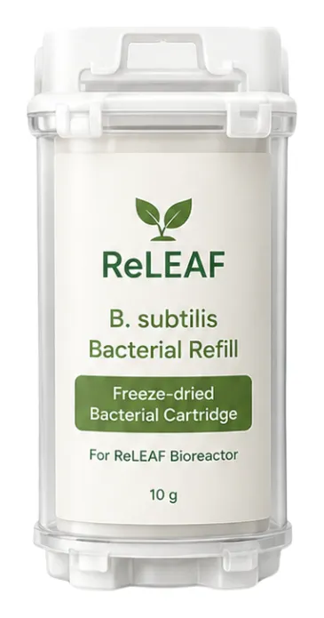
Our bacteria cartridge
Our bacteria cartridge US$90
The bacterial culture replenishment system supplies a sealed Bacillus subtilis inoculum in a cartridge that fits the bioreactor’s filter and cartridge design. The cartridge drops into the reservoir port from above and opens automatically once it is seated, so the culture goes straight into the reservoir. There is no need to handle an open culture, and the bioreactor stays closed throughout. Each package includes two culture cartridges together with the main unit. Thus, a replacement is on hand from the first season. Since the culture arrives ready to use, specialized workers do not need a lab, special equipment, or any microbiology skills to prepare fresh culture themselves.
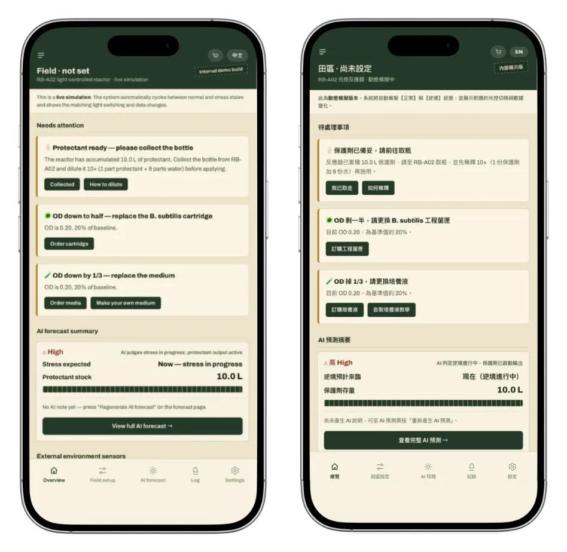
Our Field Console Mobile App
Our Field Console mobile app Free with product purchase
The app pairs up with the bioreactor and consolidates operational information into five modules: Overview, Field Setup, AI Forecast, Log, and Settings. The Overview page shows a prioritized list of required actions, a summary of the current AI forecast, real-time field and reactor measurements, a schematic of the red/green light-control system, and the status of consumables (medium and culture). The Field Setup module records the inputs from farmers regarding the farm location, the crops grown and the area allocated to each, and the numbers of soil sensors and bioreactors already installed. From this data, the system estimates the recommended equipment and its total cost. The AI Forecast module reports a stress risk level for each crop, the estimated time until stress onset based on the farmer’s location, the target quantity of protectant, and the quantity produced to date. Orders are collected in a cart accessible from the header. In the present version, all sensor readings are simulated for demonstration purposes.
Ask our team to survey your farm. We check how many soil types you have and whether conditions change from one area to another.
Determine how many bioreactors and sensors will be needed to be able to be effective on all of the intended area.
Obtain the bioreactor(s), install them at the farm, and connect them to a pre-existing distribution system or a new one if necessary.
Insert the B. subtilis cartridge (replacements can be bought from a distributor)
Turn on the device and use the AIoT screen, which will help with setup and data collection.
Done!
Business model
What is a social enterprise business model?
A social enterprise, at its core, is a business model that aims to use commercial revenue to sustain its operations and advance a social mission, which makes it distinct from a non-governmental organization (NGO). A good example of this is USE-GH, or Ubuntu Social Enterprise-Ghana, which is actually one of the organizations that inspired the very first project pitch for this. USE-GH buys directly from farmers, reducing the intermediary fees they face. It also teaches farmers to process their raw materials into finished products, so they earn more from the same harvest. As can be seen, the aim is to be able to generate enough profit to continue running all while helping the community the social enterprise wants to support, which in our case is small farmers all over the world.
Why a social enterprise?
Our vision is to have a social impact to empower farmers, which is why we chose this business model instead of a traditional one. Additionally, we want small farmers, who often have difficulties affording high-tech products by themselves, to have the tech that they should. We do this through a gradual development of our business model to ensure that we can slowly expand our business and eventually become financially stable enough so that we can subsidise farmers on our own, like we intended to from the very start. We want to be able to preserve our vision in the best way possible while not becoming an NGO, as then operations would be difficult due to high costs.
SWOT analysis
In order to better understand where our advantages and weaknesses lie, we did a SWOT analysis, carefully considering our strengths, weaknesses, opportunities, and threats.
A graphic showing our strengths, weaknesses, opportunities, and threats
Strengths
Our SWOT analysis highlights the strong potential of our project while weighing key challenges that must be addressed for successful implementation. The system’s primary strengths lie in its modular multi-chamber design, which allows for the targeted, light-triggered production of three specific protective proteins (LEA, ACCD, and BoPep4). Additionally, its cell-free delivery approach reduces biosafety and regulatory concerns, while its integration of electronic sensors and AI forecasting allows it to deliver precise protectant doses to both soil-based and hydroponic systems. These features provide a sustainable alternative to conventional chemical pesticides or outdated methods while minimizing environmental contamination.
Opportunities
Externally, the project is in a beneficial position due to the rapidly growing biocontrol market, increasing climate-related crop stress, and global support for sustainable agriculture. Additionally, many countries strictly regulate or are in the process of phasing out toxic chemical pesticides, which creates a strong push toward biological alternatives. This widens our market opportunity across both traditional field agriculture and high-tech hydroponic systems, increasing adoption potential amongst growers seeking sustainable solutions. Many companies around the world charge the same amount for microbe fermentation and sensing separately while our product is a two in one for the same price. Furthermore, since the Taiwan government is willing to give subsidies to local farmers, it makes our product more accessible to our stakeholders. Also, our product can be tailor made for different farmers from different backgrounds, which expands our market.
Weaknesses
However, the project also has several weaknesses. There could be potential protectant loss from being washed away by water. Additionally, the bioreactor might not work fast enough when met with a sudden mass onslaught of stress. Imperfections in the bioreactor could lead to dilution of the protectants, while biofouling inside the chambers may reduce protein yield and shorten the system's lifespan. The product may also face limitations in countries with strict organic certification requirements because organic certification standards exclude engineered inputs, so we do not target organic farms. Furthermore, farmers would need to learn how to replace cartridges, which could increase long-term maintenance costs and create an additional barrier to adoption. With the bioreactor, the hollow fibre membrane might get blocked, which can slow down or potentially prevent excretion.
Threats
Finally, several external threats could affect the success of the product. Unclear regulations surrounding cell-free agricultural biologics may delay approval, especially if the product falls between the classifications of a biological pesticide and a synthetic biology-derived compound. Farmer adoption may also be limited by unfamiliarity with the technology, concerns about cost-effectiveness, and reliance on traditional chemical pesticides. In addition, some farmers may view synthetic biology as too risky, while restrictions on organic certification could limit access to high-value organic farming markets. Lastly, the bioreactor may get destroyed by natural disasters such as the frequent earthquakes or typhoons in Taiwan.
PESTEL analysis
The PESTEL analysis, which shows the various aspects that may impact our business and our relations with it
Political
Political factors create both challenges as well as opportunities. Government regulations on genetically modified organism (GMO) crops represent a significant barrier to market entry in regions with strict policies. However, this also presents us with potential pathways for government support through green-tech initiatives and agricultural subsidies, which could accelerate adoption rates while reducing development costs.
Economic
Economic considerations directly influence the market viability of our product. High fertilizer and pesticide prices drive demand for sustainable alternatives, which creates favorable market conditions for our bioreactor. Furthermore, global supply chain disruptions affecting chemical fertilizer delivery could actually strengthen demand for locally produced alternatives like our bioreactor, since farmers would face shortages and price spikes. At the same time, shifts in agricultural spending patterns may affect customers’ purchasing power.
Social
Social factors are critical to the success of our product. Public perception and acceptance of GMOs are relatively mixed, which requires strong communication strategies and transparency about the safety and benefits of our product. The growing consumer demand for eco-friendly farming practices aligns well with our value proposition, although we must navigate cultural attitudes toward agricultural innovation in different markets.
Technological
Technological advancement is also a key component. Rapid developments in AI and forecasting tools allow us to create competitive advantages through better performance as well as monitoring fields in real-time. Standardized manufacturing processes for hardware and sensors are able to reduce scaling barriers.
Environmental
Environmental pressures also pose benefits and risks. Severe climate threats including droughts, heat waves, and fungal disease create an immediate demand for crop resilience solutions. The global push to meet UN Sustainable Development Goals (particularly SDGs 2, 4, 10, 12, 15) reinforces the market need for our environmental solution while opening doors to funding focused on sustainability.
Legal
Legal and regulatory frameworks also require a lot of careful navigation. Environmental release and biosafety laws determine how our bioreactor can be deployed in the market, while regulatory limitations for engineered biological products in food are very complex across different institutions. However, at the same time, clear regulatory pathways could potentially accelerate approval timelines.
Social business model canvas
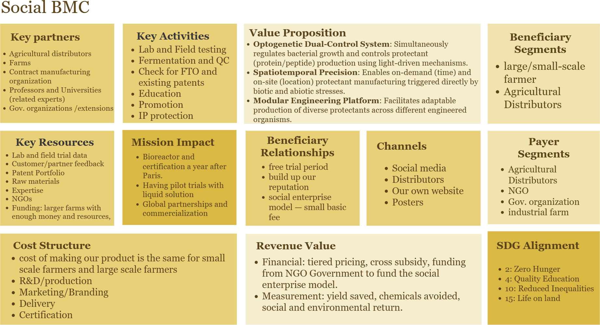
A graphic showing our Social Business Model Canvas
Key partners
Our operations rely on collaboration with agricultural distributors, farms, and contract manufacturing organizations to bring our solutions to market. We collaborate with professors and university experts for technical guidance, alongside government organizations and extensions to ensure aligned regulatory support and community reach.
Key activities
Core operations focus on extensive lab and field testing, fermentation, quality control (QC), and verifying Freedom to Operate (FTO) alongside existing patents. Additionally, we actively invest in education, promotional outreach, and intellectual property (IP) protection to safeguard and drive our technology forward.
Beneficiary segments
The primary beneficiaries targeted by our initiative include both large-scale and small-scale farmers who directly utilize the crop protection solution, as well as agricultural distributors managing local supply networks.
Key resources
Our critical assets comprise essential lab and field trial data, customer/partner feedback, planned patent applications, quality raw materials, and specialized technical expertise. Funding and support are further grounded through partnerships with NGOs, government organizations, and larger farms equipped with appropriate resources.
Beneficiary relationships
We build trust with beneficiaries by offering a free trial period to establish our reputation and demonstrate value. Operating under a social enterprise model, we maintain an accessible, small basic fee structure to keep the solution affordable for underserved growers.
Channels
We reach our audiences through active social media engagement, direct distributor networks, our official website, and targeted print media such as posters in regional agricultural hubs.
Payer segments
Financial sustainability is maintained by securing revenue and funding from agricultural distributors, NGOs, government organizations, and well-funded industrial farms.
Cost structure
Our cost drivers include fixed R&D/production, marketing/branding, delivery logistics, and official certification expenses. Notably, the unit manufacturing cost remains uniform whether produced for small-scale or large-scale farming applications.
Revenue value
Financial viability relies on tiered pricing models, cross-subsidies, and direct grant/funding support from NGOs and government bodies to sustain our social enterprise model. Success is measured beyond monetary terms through yield saved, chemical usage avoided, and overall social and environmental returns.
Long-term mission and agricultural impact
Ultimately, our mission extends to supporting long-term agricultural resilience and vision goals. By collaborating with local agricultural extension stations, research institutes, and cooperatives, we aim to stabilize seasonal farm incomes, prevent climate-driven debt cycles, preserve ancestral land assets, and make sustainable farming viable for future generations. Overall, our system gives farmers an automatic, customizable, more effective, and sustainable way to reduce crop losses from environmental and disease stress while lowering chemical use and improving yield reliability.
Value proposition
Our unique value proposition highlights the advantages of our bioreactor system containing engineered Bacillus subtilis that continuously monitors the conditions of plants and releases protectants when predetermined thresholds are reached. Our system offers farmers an automatic, customizable, more effective, and sustainable way to reduce crop losses from both environmental and disease stress while lowering chemical use and improving yield reliability.
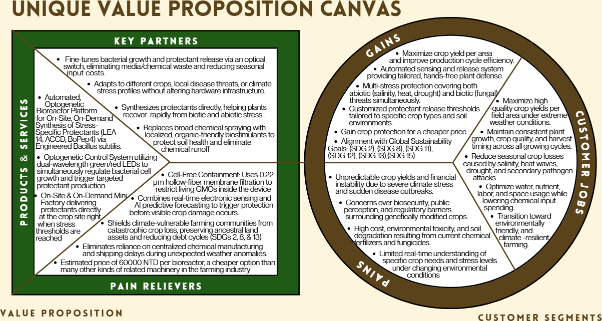
Current challenges and solutions
Current management methods often depend on repeated chemical spraying, manual monitoring, and frequent maintenance, leading to higher labor costs, chemical waste, environmental pollution, and inefficient use of resources. In addition, these traditional solutions are rarely tailored to the specific conditions of individual farms, making it difficult for farmers to identify the right time to intervene. By combining stress detection and treatment in a single platform, our technology reduces unnecessary chemical inputs, minimizes waste and runoff, lowers daily labor requirements, promotes faster plant recovery, and helps maintain more stable crop yields during challenging growing seasons.
Our solution
Unlike traditional agricultural inputs that rely on centralized chemical manufacturing and reactive spraying, our system introduces novel solutions. Instead of shipping chemical bottles to the field, we deploy an on-site, on-demand field factory directly to the farm. This bridges the gap left by standard solutions, which either rely on chemical inputs that cause runoff, basic biostimulants that lack automatic delivery, or passive alert sensors that identify stress but rely on farmers to dilute and mix protectants on their own. Our bioreactor uses engineered Bacillus subtilis to continuously evaluate crop conditions by pairing real-time field sensors with predictive stress forecasting. When environmental or biological threats pass a safety threshold, the device automatically synthesizes targeted protectants to address climate stress and plant disease precisely when and where intervention is required. Built with a flexible, modular design, the system can be adapted across different crop types and growing setups. It also takes into great consideration of biosafety, ensuring engineered bacteria remain safely contained inside the hardware to allow only active protectants to reach the crops. From our lab testing, Arabidopsis given ACC deaminase before salt stress held about 70% more chlorophyll than the Terrific Broth (TB) control, on one plate per condition. We predict that could be cross-applied to other crop types in the future with further testing. Furthermore, our solutions offer a cheaper solution and more competitive price when compared with other companies that offer similar options.
Alignment with United Nations Sustainable Development Goals (SDGs)
Furthermore, this approach directly aligns with several key United Nations Sustainable Development Goals (SDGs):
SDG 2 (Zero Hunger): Protects crop yields against severe climate events and stabilizes farmer incomes without increasing manual field labor.
SDG 10 (Reduced Inequality): Through the social enterprise business model, we allow both small and industrial farmers to have equal access to our technology, regardless of their original purchasing ability
SDG 12 (Responsible Consumption and Production): Minimizes chemical runoff, reduces operational waste, and builds resilient local food production networks.
SDG 15 (Life on Land): Provides a proactive climate-adaptation tool that protects plant health while preserving natural soil microbiomes and land usability
Market analysis
Stakeholder analysis
A traditional business model canvas focuses on single value exchange, in which the company encompasses the design of value creation, delivery, and revenue generation mechanisms within an organization. However, our social business model canvas is designed for social enterprises that aim to create impact while sustaining financial success. It recognizes that the paying customers and beneficiaries may overlap, while subsidies allow us to reach farmers who cannot pay full price.
An Influence–Interest Grid: stakeholders placed by their power over the project and their interest in its outcomes, which sets how much attention each group gets.
Manage most thoroughly
Small Scale Farmers
Our product plans to directly impact their livelihood by reducing their crop loss and potential health risks associated with exposure to chemical protectants. Since our business plan aims to support and subsidize their purchases, we should keep them directly involved and informed throughout the process.
Conventional farming farmers
Farmers who rely primarily on chemical fertilizer and pesticides often prioritize yield and cost. This group represents part of the smallholder farmers we are targeting. According to the Agriculture and Food Agency, Ministry of Agriculture, only 3.47% of Taiwan’s total farmland is organic and eco-friendly by 2024. Globally, 2.1% of agricultural land was managed organically in 2023, which in other words, over 97% of farmers worldwide are conventional, so if ReLEAF can’t earn the conventional farmer’s trust, the addressable market will shrink.
Sustainable farming farmers
Sustainable farming farmers are the ones who prioritize reduced chemical input and soil health. Convincing this segment can prove that our engineered Bacillus subtilis will not cause pollution while being sustainable, and earning their adoption would serve as an additional point of validation and credibility for our project.
Industrial Farm
Large-scale commercial operations that represent massive market validation and revenue potential. By collaborating with them, we tailored enterprise solutions.
Yes Health iFarm
Yes Health iFarm is a Taiwan commercial indoor vertical farm. They are a valuable stakeholder to us since they do precision farming to collect data and increase crop yields, with LED lighting, and pesticide-free growing methods, which is similar to our main goal. Therefore, we can also learn from their ideas without copying them.
Professors / Experts / Researchers
The experts can provide us feedback about the design through technical consultation and can shape our project direction and experimental design. In return, we can provide data collected from our sensors for them to further study their expertise.
Keep completely informed
CH Biotech
Taiwan biotech company specializing in plant growth and systemic biostimulants. We can consult with them about our protectant since they are already selling protectants in Taiwan and other countries, so we can learn from how they expand their business and the regulations in not only Taiwan but globally.
Agriculture distributor
Agriculture distributors understand farmers’ demand more since they interact directly with the farmers, and they hold practical knowledge of purchasing behavior, price sensitivity, and product concerns that we would otherwise have to gather more slowly. They also have a more complete supply chain, which will allow us to reach the farmers easily.
Anticipate and meet needs
Government (for regulations)
The government cares immensely about environmental safety laws and agricultural standards, a single policy shift can make or break our product compliance. To ensure our product fits the regulations, we should ensure all certifications are up to date and comply with safety and environmental laws.
World Vegetable Center
An international non-profit organization with massive global influence in agricultural development. Our project might just be a small part compared to them, but we should still keep track with them since their support or network could scale our social impact globally.
Government Organization (Agricultural Research and Extension Station, Department of Agricultural Science and Technology, Taiwan Agricultural Research Institute)
Researchers in these departments hold immense scientific credibility. By contacting and keeping track of these departments, they can consult us about real field conditions in Taiwan and how we should design our product to avoid breaking the law and regulations. In return, we can also provide data for them to further study their expertise.
Academia Sinica
As Taiwan’s top academic institution, Academia Sinica leads cutting-edge research across disciplines. Their input enhanced our design in different parts, including the gene circuit, engineered Bacillus subtilis, and hardware. By collaborating with their researchers, we can learn from their research and gain more feedback on the design.
Regular minimal contact
Agritalk
A company that provides farmers with deep-dive analysis on farm production, agricultural policy, new technology, and commodity markets. They are classified as our competitor, but won’t dictate our operational success.
Schools & Students
Our outreach involved hands-on science education with students, introducing synthetic biology and sustainability. Although they won’t affect the development of our product, they still represent our commitment to inclusivity and long-term behavior change through education.
General Public
We monitored public interest through interviews, workshops, and social media. Engaging with the public helped amplify our impact, though they hold limited power over the development.
Contribution to Business Plan. Helped us better understand what it’s like for small farmers who face climate stress, and also greatly inspired our project.
What we changed. Inspired our initial project, including the idea of helping small farmers to combat stress
Prof. Chen, Wen-Liang (陳文亮)
Contribution to Business Plan. At our first meeting, he suggested that we should not only focus on the local market, but also expand it globally, as the limited scale of the local market may limit our potential revenue. He highlighted some challenges that we need to address, including farmers’ adoption, competition with chemical fertilizers, limited market, and regulations. Additionally, he suggested that we treat the bioreactor and B. subtilis like a printer and ink, the bioreactor can release the B. subtilis, and the B. subtilis can be replaced like an ink cartridge. During the second meeting, he suggested that we should consider the ReLEAF database as a platform for organizing experimental data and supporting future optimization and agricultural applications.
What we changed. Realized it’s not possible to compete price-wise with chemical fertilizers so we removed that from our business plan, and he gave us the idea of selling our data. After chatting with him, we started looking even deeper into Taiwanese and international regulations for the business plan.
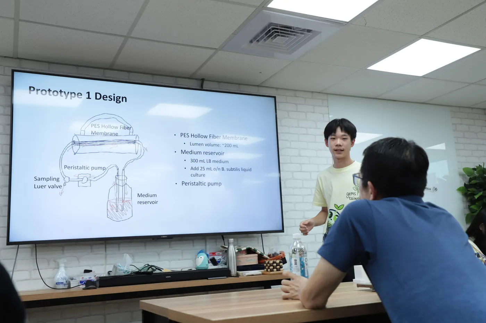
World Vegetable Center
Contribution to Business Plan. After the meeting, we realized that we needed to demonstrate that our product is environmentally safe, beneficial, and sustainable, as these factors may increase our product’s acceptance among traditional and natural farmers. In addition, we might need to do more regulations research on the usage of GMOs in order to prove it won’t harm the environment or easily escape the containment of our bioreactor.
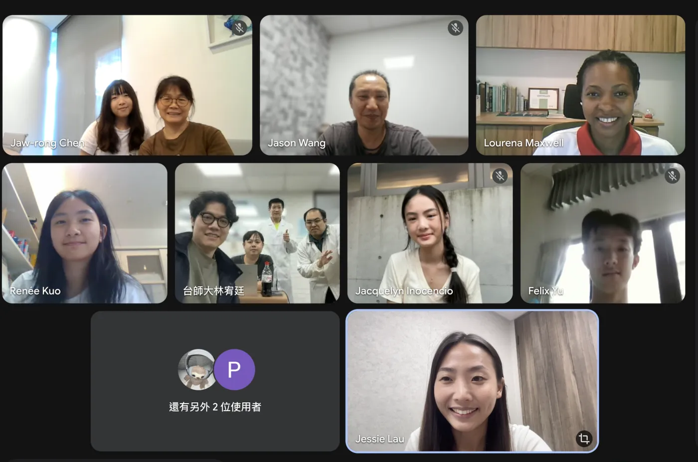
CH Biotech (正瀚生技)
Contribution to Business Plan. Advised that we research more about regulations in Taiwan and any country we plan to expand to before actually taking action.
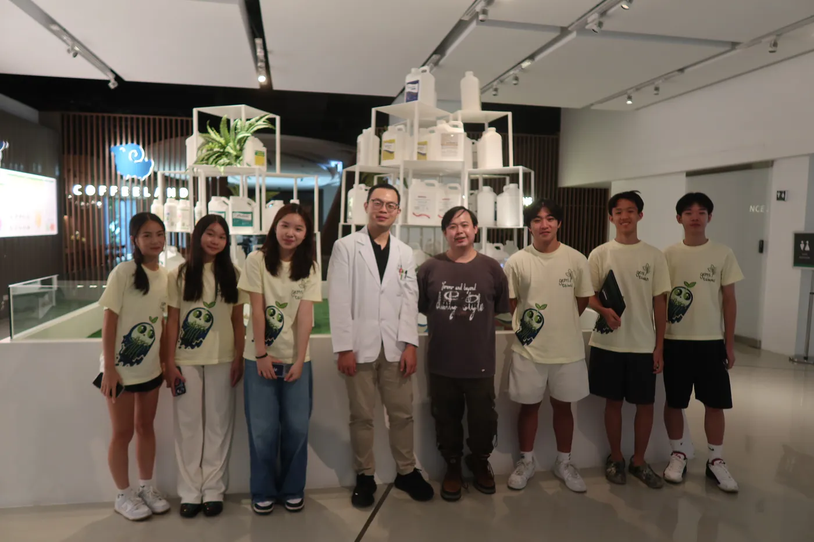
BIO-Asia Taiwan Exhibition Visit
Contribution to Business Plan. From a conversation with Bioeconomy Corporation from Malaysia there, they suggested we should further research Southeast Asian countries, as many of them have large agricultural sectors but have looser laws in comparison to countries such as the US or coalitions like the EU.
What we changed. Decided to research regulations in Southeast Asian countries and ended up deciding to expand to the Philippines and Indonesia after Taiwan.
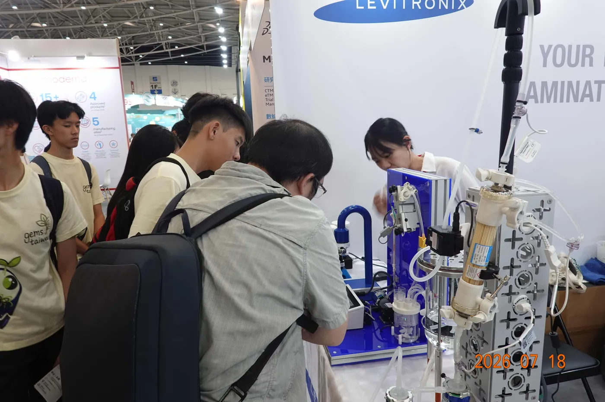
Ms. Chen, Hui-Wen
Contribution to Business Plan. As someone that practices organic and hands-free farming, she stands at the complete opposite of the spectrum in comparison to us, so speaking to her brought many valuable perspectives and new ideas that we previously hadn’t considered. By visiting Ms. Chen’s Happy Farm in Tamsui, we learned about traditional and natural farmers’ perspectives on the application of technology in agriculture, allowing us to gain a better understanding of their needs. Ms. Chen also emphasized the importance of addressing the concern that providing plants with external support may prevent them from adapting to environmental challenges and developing resilience through their own responses.
What we changed. Added some aspects to the weaknesses of our product and was able to better address the aspects of different farmers within the business plan.
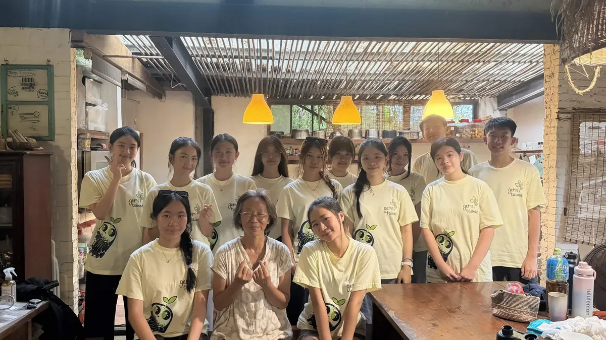
Smart Agriweek Taiwan
Contribution to Business Plan. By visiting the Smart Agriweek Exhibition, we learned that the main demographic that will be interested in our product is young farmers, but it also means that we need to find ways to convince older farmers to also adopt our product. Moreover, regulations will definitely be hard for us as a product that uses GMOs. Additionally, we now know that we have a pricing and value advantage, as our product counts as many products in one for a much cheaper price than it would take for a farmer to, for example, buy both BioBar and AgriWeather’s products. Talking with them also allowed us to receive confirmation that government sectors are willing to help and subsidize products that are like ours if necessary.
What we changed. Finalized our own pricing based on the pricing we learned from other companies that are selling products similar to ours such as BioBar and AgriWeather, along with adding a new aspect to the value proposition.
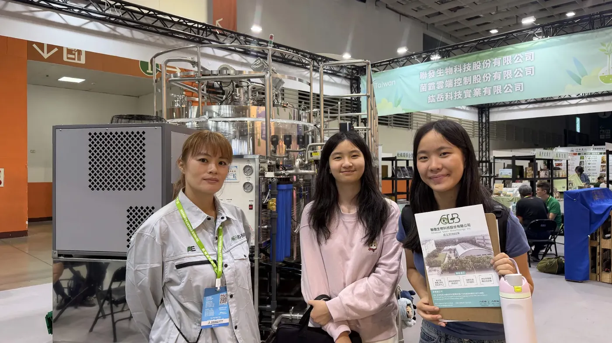
Director Wu, Tzu-Hsien (吳姿嫻)
Contribution to Business Plan. During the meeting with Director Wu, we discussed regulations in Taiwan, target crops, farmers’ adoption likelihood/cost considerations, and our cost calculations. It brought to our attention the fact that we’re still missing factory, labour, bacterial cultivation, and the additional costs of waste management in our calculations. She also encouraged us to identify more commercially valuable crops that are vulnerable to environmental stress as our target crop in the business plan. It emphasized the need to demonstrate the effectiveness of the protectant, ensure biosafety, and treat agricultural waste. Furthermore, it acts as a bridge between us and the farmers to promote our product through its reliability as a government sector.
What we changed. We will be focusing on 1 or 2 very specific crops for our project so that we can have a clearer demographic, and create a better explanation for the value of having a sensor like ours instead of an automated system that sprays cheaper and easier to transport protectants. Additionally, Director Wu can work as a bridge between us and the farmers for future cooperations regarding subsidizing, or other farmer support plans.
Agriweather
Contribution to Business Plan. He mentioned that since our bioreactor doesn’t connect to a farm’s irrigation system, it means that farmers have to go there and collect it themselves or use a drone. This means we have to justify the usage of our bioreactor when using a system like theirs that can just control and do everything for them is much more convenient. Mr. Lu also mentioned that we need a more specific staged adoption plan for farmers, along with the fact that products often pass and become popular by word of mouth, both between farmers and from Ag. Research Extension Branches or researchers that farmers trust.
What we changed. Expanded our product positioning and explain why our product does not come as an easier-to-transport bottle.
Prof. Chang, Hung-Hao (張弘浩)
Contribution to Business Plan. Evaluate ReLEAF’s market feasibility and commercialization potential. The email consultation focused on farmer adoption, regulation, biosafety, and economic viability.
What we changed. Do more research on the regulation and narrow the initial application to a specific stress and crop.
Industry analysis
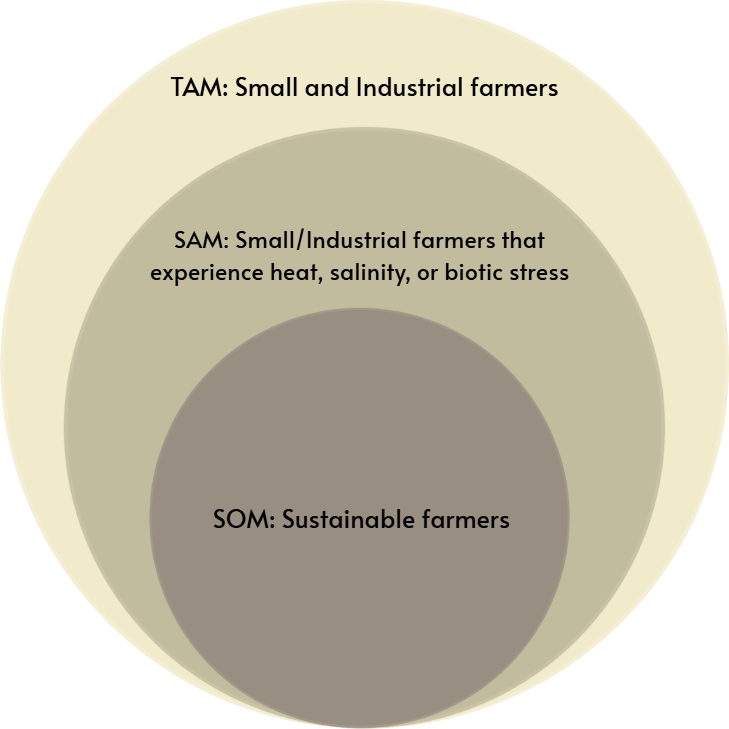
A chart showing the size and type of market we’re targeting
Total addressable market
About 570 million farms worldwide (Ritchie & Roser, 2021), with over 916 million people working on farms and the agricultural sector in 2023 (FAO, 2025).
Serviceable available market
399 million farms, or 70% of farmers report being affected by climate stress (Bayer, 2023).
Serviceable obtainable market
Hard to quantify because it’s not something that has a clear definition or method of registration, but there are around 4.7 million organic farms worldwide.
Overview of the global protectant industry
The global protectant industry is within the agricultural sector, valued at 77.17 billion USD, as rapid climate changes and a growing population demand for more and better crops, this market is rapidly expanding. The more specific market that we will be in is bioprotectants, or biocontrol agents where biological parts are used to create protectants, instead of the chemicals that usually dominate the market. This market was valued at 9.4B USD in 2024, and is projected to reach 22.8B by 2030, providing strong proof of future growth and hindering market failure. In comparison, the chemical fertilizer/protectant market has already reached 216.52 billion USD in 2025, and is projected to reach 299.69 billion USD by 2030.
Key companies in bio-protectants
Key bioprotectant companies are driving the shift toward more sustainable crop protection by developing biological alternatives to conventional chemical pesticides. Bioprotectant leaders such as Bayer AG, BASF SE, Syngenta AG, and Corteva Agriscience are accelerating innovation in the rapidly growing bioprotectants market through research, strategic partnerships, and expanded commercial production of biological crop protection products. One such example is CH Biotech in Taiwan, which produces biological protectants similar to ours, which can create opportunities for potential collabs.
Market opportunities
As resistance to chemical pesticides continues to increase and global climate movements accelerate the adoption of more sustainable farmer practices, the interest in bioprotectants has also increased. Climate change is making weather patterns increasingly unpredictable, introducing new environmental stresses that traditional farming experience alone can no longer reliably anticipate or manage. This creates a need for intelligent systems that can respond to changing conditions in real time. Our bioreactor addresses this gap by continuously sensing environmental and plant stress signals, producing only the specific bioprotectants necessary. By combining automation, precision, and sustainable bioproduction, our bioreactor represents a new generation of agricultural technology designed to help revitalize farming in an increasingly uncertain climate.
Challenges
Despite all these opportunities, our product will undeniably face several challenges on the market. Because our product includes GMOs, it will face legal hurdles such as extensive testing, heavy usage restrictions, and close government surveillance, as several countries and key markets, including the European Union, Australia, and our home country, Taiwan, treat GMOs with much caution. This could also restrict how much of our product we can distribute throughout countries and in Taiwan, and make it so that the person buying our product needs a license to use it. Aside from existing legal challenges, there’s also existing stigma regarding synthetic organisms that may push farmers away from purchasing our product, as they fear it could negatively affect the environment or escape the containment of our bioreactor. The B. subtilis itself could also present a challenge in that its survival rate may be too low to truly be sustainable, causing a need for frequent switches and creating a high cost to using our product that will likely alienate our target demographic, who are smaller, sustainable farmers.
Strategic positioning
We know of no product on the market that responds in real time to the stresses faced by plants, where the protectants are only produced when stress reaches a threshold level and at the exact amount that is suitable for the farm it is used on. Unlike current solutions, which require farmers to determine when, where, and how much protectant to apply, our system automates these decisions. This type of customizability and specificity is unique to our product, and unlike current solutions which require farmers to constantly have to interpret when to use protectants, how much to use, and where to use it, risking overuse or underuse that not only harms plants, but also the environment. Additionally, because our bioreactor has a sensing, response, and production system all in one, our product also has competitive pricing in comparison to other similar products, which can price around 80,000 to 100,000NTD for just sensing or just protectant production. Our bioreactor and B. subtilis is also capable of responding to several specific types of stress, instead of just using one cure-all that could be unsuitable to fully tackle the biological effects of a certain stress type on various crops.
Competitor analysis
Feature
Syngenta
Pinsoa Chemical
CH Biotech 正瀚生技
Advanced Green Biotechnology 聯發生物科技
AgriWeather 阿龜微氣候
ReLEAF
Real-time automated sensing
No
No
No
No
Yes
Yes
Eco-friendly, zero chemical residue
No
No
Yes
Yes
No
Yes
Targeted bioprotection
No
No
Yes
No
No
Yes
On-site, on-demand production
No
No
No
No
Yes
Yes
A comparative table of our product in comparison with similar products existing in the market
Summary
Our project stands out from competitors by establishing a decentralized, on-site, and on-demand field-deployed factory. Unlike hardware-only systems like AgriTalk or Smart Control Boxes that provide data or automation without any physical treatment, our system directly addresses current solution gaps by producing and applying targeted treatments right where they are needed. This eliminates the labor-intensive, completely manual spraying required by standard biostimulant and biopesticide platforms like Robigo, APOLO Biotech, BioWorks, or Flourish, minimizing human error and optimizing application timing. This enables high ecological efficiency and precise crop protection with minimal waste, offering immense scalability and operational cost reduction over time.
By generating solutions on-demand right on the farm, our system offers targeted activity, enabling a cleaner, safer, and more autonomous farming process with lower resource inputs and broader crop compatibility.
Marketing strategy
Pricing
Our pricing strategy is designed around seasonal agricultural cash flow. Throughout Taiwan and Southeast Asia, most smallholder farmers earn their income primarily after harvest cycles. To overcome the high upfront cost of hardware, the system is designed as a low-cost reusable base unit paired with replaceable, seasonal peptide cartridges. Target pricing centers around the abiotic stress present during the growing season. Adoption is most likely if one season of the service costs the same as the existing method and if the device reduces repeat spraying labor and crop loss risk. However, farmers now evaluate solutions based on yield stability, affordability, and reduction of financial risk. A solution would be a reusable drive and a replaceable cartridge system that aligns best with farmer spending behavior which would be a low-cost reusable base device and replaceable seasonal peptide cartridges.
Initial sales strategy
Our initial sales strategy focuses on partnering with organizations rather than individual farmers, allowing for faster adoption, larger-scale deployment, and greater credibility. By working with established agricultural networks, we can efficiently introduce our technology to multiple farms while building trust through institutional support.
Sales objectives
First commercial pilot programs will launch in 2027
Secure at least 2 pilot partnerships with agricultural cooperatives, research farms, or extension offices by the end of 2027
Convert at least 1 pilot into a long-term supply or service agreement in 2028
Sales process
Connect with customers through agricultural expos, farming associations, and sustainability events.
Pilot Programs: Deploy 5–10 bioreactor systems for one growing season with training and technical support provided through the program
Conversion: Turn successful pilots into long-term purchasing or partnership agreements
Retention: Provide continuous technical support, system maintenance, customization, and performance monitoring
Sales strategy/target customers
Senior & Traditional Farmers: These farmers are risk-averse and value proven results. We reach them through local Farmers’ Associations , Production and Marketing Groups, and government research stations such as the Taiwan Agricultural Research Institute (TARI). To lower their barrier to entry, we utilize government agricultural subsidies and conduct hands-on, face-to-face field demonstrations.
Young/Teen Farmers: Tech-savvy and open to sustainable solutions, younger farmers act as early adopters. We connect with them through AgTech expos, youth farming networks, and research organizations, sharing our pilot data and research to build technical trust.
Distribution
At the beginning of our product launch, our platform is not big enough to successfully perform a sufficient amount of direct sales, so our distribution will primarily be done through partnering with agricultural distributors to sell our product. This way, we can influence the Taiwanese market without having to expend the time and energy to directly make connections just to sell our product.
Our distribution will primarily be done through selling our product to middlemen and selling internationally, as the laws and regulations in Taiwan may make it difficult for our product to be approved and widely distributed here. Taiwan is still our first market, and we will expand to more open international markets such as the Philippines, Thailand, and the United States of America afterwards. These locations have looser laws on GMOs and AgTech than areas such as Europe or Japan, and are highly affected by increasing climate stress, so these markets have higher demand for our product. Our product will be distributed in a business-to-business (B2B) way, indirectly through middlemen that will buy our product and then distribute them afterwards to farmers, as they will have more sway and connections to various types of farmers and areas than us.
Promotion and advertising
Our target market is conventional smallholder farmers, and our entire promotion strategy is built around them. To reach these target farmers where they appear most, we will focus our efforts through local agricultural institutions, extension stations, and cooperatives. To build trust within these farming communities, we use a zero-configuration physical interface designed specifically for them. It eliminates all complex inputs and uses a heavy-duty, single-button system with mechanically keyed cartridges for our target farmers to operate.
To convince these smallholders to try the system and lower their financial risk, we will offer them a free trial period. We will also use a seasonal rental, shared ownership model, or subsidize their purchases either through collaboration with the government or by using our own profits to pay for part of the cost. This keeps the cost equal to or less than what they already spend on chemical fungicides, which lowers the financial barrier for these farmers. One way we can do this is through cooperation with Taiwan Agricultural Research Institute, who can promote our product to various farmer demographics and help subsidize the initial purchase of our bioreactor and first few purchases of the bacteria cartridge. To establish early trust, we introduce the hardware first to show operational reliability before introducing the cartridges. Once our pilot farms reach our target of 10-15% higher yield and 20-30% less spraying, measured against their own previous season, we will launch a referral discount. This rewards our target farmers for recommending the system to others, using their networks to speed up adoption.
Barriers to entry
Investment Cost
ReLEAF requires substantial investment in both biological research and hardware development. Costs include developing and testing the bioreactor, pumps, sensors, hollow-fiber membrane system, and containment mechanisms, as well as genetic engineering, protein production, efficacy testing, and regulatory testing. Commercialization would also require investment in manufacturing, quality control, and market-specific regulatory compliance.
Branding
ReLEAF introduces a relatively unfamiliar agricultural technology that combines biotechnology with an automated bioreactor. Farmers and agricultural organizations may therefore require evidence of safety, effectiveness, reliability, and economic value before adopting the system. Building credibility through field trials, partnerships with agricultural organizations, transparent experimental data, and demonstrations would be important for overcoming this adoption barrier.
Technology Limitations
ReLEAF combines several technologies that must work reliably as one system, including engineered Bacillus subtilis, stress-responsive control, protectant production, and membrane-based separation within the bioreactor. The system must maintain stable production while preventing the engineered bacteria from entering the agricultural output. Competitors would therefore need significant technical expertise and experimental validation to reproduce the complete system rather than only one individual component.
Access to Resources
Developing ReLEAF requires access to specialized laboratory equipment, genetic engineering facilities, microbial strains, biological materials, bioreactor components, and expertise in both biotechnology and engineering. Commercial production would additionally require reliable suppliers, manufacturing capabilities, testing facilities, and regulatory support. Access to these specialized resources can make it difficult for new competitors without established laboratory, engineering, or agricultural partnerships to enter the market.
Marketing timeline
ReLEAF’s 2027 Marketing Strategy
Our sales strategy will launch in 2027, aiming to drive the adoption of our bioreactor system across key agricultural sectors, including local farming cooperatives, general public, and regional extension networks with a strong interest in climate resilience and sustainable crop protection. This strategy is designed to build credibility, trust and expand our market reach while offering financial options that can cover both immediate field deployment for conventional smallholder farmers and long-term stakeholder engagement. By prioritizing early trust with local smallholders, we aim to establish a reliable commercial foundation that can support sustainable community growth over time.
Public & Digital
Digital Publications as well as activity on different social platforms is one of our sales strategies. Not only will we reach out to companies, influencers would also be essential to spread our system. This part will focus on building up credibility for our bioreactor system through the publishing of research papers which will share our research progress throughout the months as well as results and data to help build trust in the scientific aspect. Furthermore, by launching an official website, information about our product will be more accessible to users, further adding to our credibility. By the second and third quarter, we plan to continue maintaining a digital presence by posting new information as well as anything we feel like would be beneficial for customers/users to know.
Industry Outreach / PR
Industry outreach and public relations is essential in order to build credibility and maintain a positive reputation through the media. This piece focuses on establishing ReLEAF’s credibility within the agricultural technology and synthetic biology industries before asking smallholder farmers to trust the product. By pitching our containment approach and dual-stress protection as a category first, rather than an improvement on existing biostimulants, we can pursue coverage in agricultural trade publications and outlets. Press releases will also be tied to concrete milestones so that our public narrative is always backed by data rather than just ideas.
Conferences & Events
Conferences and events will span across the summer as we use these methods to gain insight from farmers and gain academic insight for our product. Conferences are also an opportunity for experts and farmers to come together. Gaining valuable insights leads to improvements for our system which could attract more consumers once the changes are made accordingly. Through events, we can better understand the lifestyle of smallholder farmers and how they address stress affecting their crops. Through this valuable feedback, we could adjust our project so that it aligns with their practices.
Pilot Programs
By developing pilot programs through a 9-month period in total, we get to let farmers have a first hand experience using our product. Their adaptivity, their acceptance of sustainable agricultural technology, and their critiques are all necessary for us to develop a final product that suits smallholder farmers most. First there would be a 3-month trial during the 2nd quarter and based on the feedback, we would develop a second stage with a 6-month trial spanning across the 3rd and 4th quarter. With the pilot programs, it gives us insight on raw opinions on our product.
Sales and Partnerships
Sales and partnerships are necessary to ensure our product is noticed on the market. Starting with lab sales during the 1st quarter, we start branching out to academic sources allowing others to gain accessibility on our product. Additionally, since our product relates to agriculture, licensing is necessary. During the 3rd quarter of our marketing strategy, we would spend these 3 months to ensure that we acquire the licensing needed to be put on the market. Alternatively, we can offer a rental service for farmers wanting to try out our product first before buying it or offer a monthly service for the same reason. We can cater our product for farmers from diverse backgrounds.
Educational Outreach
Another one of our sales strategies is to reach more of the general public with educational outreach events and resources. Our goal is to connect with a younger and common audience and get them interested in sustainable farming. We plan to do this using specialized school kits built around an easy-to-use website. This website features simple lesson plans, fun activities, and interactive games. By using these creative materials, we can share our project’s mission in a way that actually holds a student’s attention. This allows us to teach the younger generation about major global issues, like climate change and food security, at an early age. Starting with kids helps us build genuine trust within families and neighborhoods from the ground up.
ReLEAF Product Development. Six phases from concept validation to European Union entry, over a seven-year horizon. Each column is six months.
Phase 0: Concept Validation (Year 0–1)
ReLEAF will establish its synthetic biology framework and demonstrate laboratory-scale proof-of-concept for an automated, light-responsive bioreactor. We will validate the pNW33N-L2 shuttle vector carrying superfolder green fluorescent protein (sfGFP) and integrated ccaSR light-responsive system in Bacillus subtilis, following Modular Cloning (MoClo) 2.0 standards. Key milestones include optimizing electroporation efficiency and constructing the phycocyanobilin (PCB), ccaSm10 light sensor (LSM), and ccaR transcriptional output modules (TOM). We will evaluate light-controlled expression of protectants, including LEA 14, ACCD and BoPep4, under 535 nm green and 670 nm red light. Experiments using Arabidopsis thaliana will assess plant fresh weight, chlorophyll content, germination rates, and recovery under salinity and heat stress, alongside relevant protectant treatments and controls. By the end of Year 1, we aim to demonstrate an integrated Machine-Microbe Interface (MMI) capable of controlled protectant delivery within a contained bioreactor. We will also develop scientific models connecting laboratory results to the environmental vulnerabilities and economic importance of target crops, particularly cherry tomatoes. Finally, we will begin transitioning from liquid media to soil-based laboratory experiments to evaluate protectant diffusion and effectiveness, while exploring intellectual property protection for our optimized circuits and microbial systems.
Phase 1: Regulatory Preparation and Field SOPs (Year 1–4)
ReLEAF will establish a Taiwan-specific regulatory roadmap before conducting agricultural pilots or commercial sales. We will consult the Ministry of Agriculture and other relevant authorities to determine whether the final cell-free protein and peptide formulation falls under the Fertilizer Management Act, including the potential category of Plant Growth Auxiliary Materials. If its intended use or marketing claims involve pest or disease control, additional assessment under the Pesticide Management Act may be required. We will also investigate its suitability for certified organic farming. The engineered Bacillus subtilis production culture will be assessed separately from the final cell-free product. We will clarify requirements for laboratory research, contained production, transport, storage, and waste disposal. The 0.2 μm hollow-fiber membrane is designed to retain bacterial cells, but its containment performance must be experimentally validated. Testing will also assess viable production organisms and residual recombinant DNA using documented methods and detection limits. Bioreactor safety, including electrical hazards, potential pressure risks, leakage prevention, and cleaning procedures, will be evaluated. In parallel, we will develop standardized operating procedures (SOPs), product testing plans, and evidence requirements for safety and efficacy. Potential research partners include the Taiwan Agricultural Research Institute, Tainan District Agricultural Research and Extension Station, National Chung Hsing University, and Academia Sinica. Taiwan will serve as our initial validation market, followed by the Philippines and Thailand. The United States and European Union will be considered at later stages because of their more complex market-entry requirements. All pilots and commercial activities will depend on confirmed regulatory requirements, necessary permissions, and demonstrated product performance.
Phase 2: Industrial-Scale Readiness and Regional Expansion (Year 4–5)
ReLEAF will transition from laboratory validation toward scalable production and regional commercialization. We will address industrial bioreactor challenges involving mass transfer, heat removal, and oxygen distribution by developing automated cooling, advanced sensing, and process monitoring to maintain stable operating conditions and reduce inhibitory metabolic byproduct accumulation. Our product-development pipeline will combine computational modeling, the development of stress-tolerant protectants, and validation under relevant agricultural conditions. The Philippines will be our first international expansion market, offering opportunities to work with smallholder farmers and agricultural cooperatives while supporting food security and agricultural sustainability. Before entering the market, we will clarify requirements for equipment importation, distribution, and safety; assess the engineered culture under the applicable Philippine biosafety framework; and consult the National Committee on Biosafety of the Philippines (NCBP) and Fertilizer and Pesticide Authority (FPA) regarding the production system and final cell-free formulation. The specific regulatory pathway and timeline will depend on the final product classification and relevant authorities' assessments. We will also seek partnerships with the International Rice Research Institute (IRRI), local universities, and agricultural cooperatives to design authorized pilot programs and evaluate product effectiveness under local conditions. Based on successful validation and regulatory permissions, we will develop initial commercial agreements and explore licensing opportunities. We will also begin assessing environmental data services as a potential future revenue stream, using operational data internally to improve product performance and services.
Phase 3: Global Infrastructure and Market Diversification (2031 onward)
ReLEAF will expand into Thailand, adapting its technology and service model to regional weather patterns, crop requirements, and agricultural practices. This phase will focus on establishing early commercial-scale operations and diversifying revenue beyond the initial Taiwan and Philippine markets. We will consult the relevant Thai authorities to clarify requirements for bioreactor importation and equipment standards, the contained use and industrial-scale production of engineered microorganisms, and the registration of the final cell-free protectant under the Thailand Fertilizer Act B.E. 2518 (1975) or other applicable regulations. Biosafety assessments will address containment, risk classification, waste treatment, transportation, monitoring, and emergency procedures where relevant. To support market entry, we will pursue partnerships with Thai agricultural research institutions, universities, distributors, and cooperatives. Authorized trials will help identify suitable crops and validate performance under local environmental conditions. Commercial expansion will depend on product effectiveness, regulatory feasibility, and demonstrated demand. To improve scalability, we will evaluate global contract manufacturing and licensing arrangements where commercially feasible. We will also assess separating bioreactor hardware services from biological product supply, providing greater flexibility for equipment distribution and local partnerships while maintaining separate oversight of the engineered production culture and final cell-free formulation.
Phase 4: United States Market Entry (Year 5–6)
ReLEAF will evaluate entry into the United States, targeting commercial farms, premium-crop producers, agricultural research institutions, and potential manufacturing partners. Although the market offers significant agricultural opportunities, its geographic distance and federal–state regulatory structure will require additional investment in compliance, distribution, and technical support. We will separately assess the regulatory requirements for the engineered Bacillus subtilis production culture, final cell-free protectant, and bioreactor equipment. For the engineered organism, the U.S. Environmental Protection Agency (EPA)’s biotechnology framework under the Toxic Substances Control Act (TSCA), particularly 40 C.F.R. Part 725, will be investigated to determine whether exemptions, notifications, or other requirements apply. We will also assess whether the U.S. Department of Agriculture Animal and Plant Health Inspection Service (USDA-APHIS) has jurisdiction based on the organism and proposed use. The final product will undergo a separate classification review. ReLEAF intends to focus on abiotic-stress resilience rather than pest or pathogen control; however, its classification will depend on its formulation, intended function, and marketing claims. EPA requirements under the Federal Insecticide, Fungicide, and Rodenticide Act (FIFRA) may be relevant if the product falls within pesticide or plant-regulator definitions. State-level fertilizer and plant-biostimulant requirements will also be reviewed for each target market. Product validation will include composition, stability, safety, efficacy, microbial containment, and residual recombinant DNA testing. We will seek local research, manufacturing, distribution, and technical-support partners to reduce operational costs and adapt product specifications to individual state requirements. Commercialization will proceed only after the relevant regulatory pathway has been clarified, necessary approvals or registrations have been obtained, and sufficient market demand has been demonstrated.
Phase 5: European Union Expansion (Year 6–7)
ReLEAF will explore expansion into selected EU member states, building on the technical evidence and commercial experience gained in earlier markets. We will evaluate target crops, regional agricultural needs, potential research partnerships, and distribution opportunities before committing to large-scale market entry. One potential pathway for the final cell-free formulation is Regulation (EU) 2019/1009, particularly Product Function Category (PFC) 6(B) for non-microbial plant biostimulants. This category may be relevant because ReLEAF investigates BoPep4 for salinity tolerance, LEA 14 for drought and osmotic-stress protection, and ACC deaminase for heat-stress mitigation. However, eligibility will depend on the final formulation, ingredient eligibility under the relevant Component Material Categories (CMCs), and compliance with applicable composition, safety, efficacy, labeling, and conformity assessment requirements. The engineered production culture will be assessed separately under the applicable EU contained-use framework, including Directive 2009/41/EC where relevant. This review will address the handling, storage, transportation, containment, and disposal of biological materials and waste. The bioreactor will also undergo an equipment compliance assessment covering applicable machinery, electrical, and pressure-equipment requirements, including Directive 2014/68/EU where applicable. To support entry, we will pursue partnerships with European research institutions, universities, distributors, and agricultural businesses. Data from earlier markets may support product development and regulatory discussions, subject to relevance and acceptance under EU requirements. If the harmonized plant-biostimulant pathway is unsuitable, we will investigate alternative lawful routes before investing in commercialization. Market entry will depend on confirmed regulatory feasibility, successful product validation, and sufficient commercial demand.
From our meeting with Mr. Quillere, we learned that France has a robust agroeconomy and has an existing technology gap for farmers, which means that it can create an opportunity to enter the European market more smoothly.
The bioreactor is a compact optogenetic bioreactor system using Bacillus subtilis to produce protective compounds (LEA proteins, ACCD, and BoPep4) for management of different types of crop stress. Light-controlled gene expression regulates compound production in real-time, delivering targeted protection to smallholder farms.
Our Bioreactor and its components
ReLEAF has shown proof of concept in the lab. Our next steps are to make it into a product farmers can use, guided by what experts told us and by the gaps in our own data.
Cartridge design
Following the suggestion of Professor Chen Wen-Liang (陳文亮), ReLEAF uses a “printer and ink” model. Farmers buy the bioreactor once and replace the B. subtilis culture like an ink cartridge. Our current cartridge is sealed. It drops into the reservoir port and opens once seated, so farmers never handle live culture.
Next, we will redesign the cartridge and bioreactor in two ways:
Connect to irrigation. Farmer Mr. Lu pointed out that a bioreactor not linked to irrigation leaves the farmer to collect and apply the protectant by hand.
Keep culture viable for six months. The cartridge must last its full shelf life, which sets how often farmers need refills.
Regulation follow-up
Taiwan’s Ministry of Agriculture (MOA) and the Animal and Plant Health Inspection Agency (APHIA) restrict field release of genetically modified organisms. However, a system where the engineered bacteria never leave a sealed device can be classed as contained-use equipment. ReLEAF releases only cell-free protectants through a 0.2 µm hollow-fiber membrane, so our next steps are:
Prove containment. We will run escape-frequency assays and test membrane integrity. We will ask government-recognized units, such as the Taiwan Agricultural Research Institute (TARI) and the Tainan District Agricultural Research and Extension Station, to verify the results.
Register as a biostimulant. Under Taiwan’s Fertilizer Regulations, registering LEA and ACCD as biostimulants takes about 4 to 5 years. Registering as a biopesticide would take 3 to 5 years.
Register as a fungicide. Since BoPep4 could also potentially be applied to prevent fungal infection, after lab and real field validation of its protective effect we will start work on registering it as a fungicide, which takes 1 to 2 years (CIRS Group, n.d.).
CH Biotech and the World Vegetable Center both advised us to settle the regulations in each market before entering it. Every expansion step below therefore starts with regulatory consultation.
Target crop field testing
iGEM rules limit our plant experiments to Arabidopsis thaliana. In our main salinity test, seedlings given ACC deaminase before the stress held about 70% more chlorophyll at 100 mM NaCl than the untreated control, 1.74 against 1.03 mg/g (Plant). Each condition was one plate and our runs disagree on which application timing works best, so this is a first signal rather than a settled effect. Director Wu Tzu-Hsien stressed that we need to show the same effect on a commercially valuable crop that suffers from environmental stress.
We chose tomato because heat above about 32 °C by day and 20 °C by night reduces its fruit set (Sato et al., 2000). The enzyme dose our Math Model sizes for rice, 37.6 kU per hectare per spray, has not yet been tested on tomato, and the pricing model below is built on a far smaller per-plant dose, so field trials are our most important next step: they decide which of the two is right. Pilot trials with Taiwanese smallholder farmers are planned for October 2027 to June 2028, using 20 to 50 devices.
Deployment
Taiwan first. We will launch through partnerships with TARI, regional agricultural extension stations, cooperatives and farmers. At Smart Agriweek Taiwan, government representatives told us they are willing to support and subsidize technologies like ReLEAF.
The Philippines next. At the BIO-Asia Taiwan exhibition, Bioeconomy Corporation from Malaysia recommended that we look at Southeast Asia, which has large agricultural sectors and less strict regulations than the US or EU. In 2024, Philippine agriculture, forestry and fishing generated about ₱1.78 trillion in gross value added, while rice (palay) output fell 4.8% from 2023 (Philippine Statistics Authority, 2025). The Fertilizer and Pesticide Authority (FPA) gives us a clear regulator to consult first. Whether we expand will depend on regulatory feedback, field results and farmer demand, not on market size alone.
Pricing model
Every farm is different, so ReLEAF does not have one fixed price. In our interactive model, farmers enter three things:
Input
Range
Farm Size
0.25 to 5 ha
Crop Types Grown
1 to 3
Planting Density
22,000 plants/ha (small-fruit tomato) or 33,000 plants/ha (large-fruit tomato)
The densities come from the Tainan District Agricultural Research and Extension Station (2012). From these inputs, the model calculates the number of plants and how much enzyme each spray needs. It then works out the hardware the farm needs:
Bioreactors: about two per hectare. Each produces a 1 L batch every 16 hours, and two of them cover one hectare’s spray inside a two-day window at the dose this model assumes.
Sensors: one moisture sensor per crop type.
Cartridges: enough to cover either the protectant the farm uses or the six-month shelf life, whichever runs out first.
That fleet is sized from an assumed dose of 203 U of enzyme per hectare per spray, scaled by planting density. The model marks it as its largest assumption, because no dose has been tested on a crop.
Our Math Model reaches a different figure by a different route, and the two should be read side by side. It takes the volume actually sprayed on a treated plate, 1.67 mL over 78.5 cm², scales that rate over a hectare and applies a modelled rice canopy correction, giving 37.6 kU per hectare per spray: 185 times the dose assumed here, and about four 20-litre reactors per hectare instead of two one-litre ones. The two are not the same quantity. This model assumes a targeted dose delivered per tomato plant; the Math Model scales a whole-plate application rate across a rice field through a canopy factor that has never been measured. Neither has been validated in a field, and the Math Model calls its own figure the dose that worked rather than the smallest that works.
The prices below follow the dose assumed here. If the Math Model’s rate is the one that holds in the field, the reactors per hectare and the cost per hectare rise with it, and the break-even area moves. Settling which dose is right is what the tomato field trials above are for.
Director Wu pointed out costs we had left out: factory, labor, bacterial cultivation and waste management. We added them to the model. Each farmer can then see a Year 1 package price, which includes hardware and cartridges, and a lower yearly cost after that, when they only buy cartridges.
When we tested farm sizes from 0.5 to 20 ha, contribution stayed at about US$2,000 to 2,500 per hectare. This gives a single break-even target of about 226 ha, however many farms that area comes from.
Target market
ReLEAF sells farms a kit: bioreactors that grow our protective bacteria, sensors that show when plants are stressed, and cartridges of freeze-dried bacteria that need to be refilled. We grow in phases: first we prove the product and run pilot farms in Taiwan, then we sell in Taiwan, and we repeat the same steps one country at a time (the Philippines, then Thailand, with the US and EU as later options). In Taiwan, the average farm is only about 1 hectare: 0.77 ha by census figures and 1.1 ha in a 2015 report (DGBAS, 2020; FFTC, 2015). We build the kit and the numbers for a farm of this size.
Investments
For our funding, we decided to develop it into three development stages: R&D to iGEM Jamboree, Post-iGEM proof-of-concept validation, and First commercial pilot deployment.
Stage 1: R&D to iGEM Jamboree
Our primary goals are building a functional prototype system, validating peptide expression and secretion, characterizing AND-gate responses, demonstrating bioreactor feasibility, and generating preliminary safety and efficacy data. The sources that will likely fund us are school/university innovation funding, small fundings from biotech companies, and Taiwanese education grants. When people invest into a project, there are essential aspects that they are looking for. Therefore, our project needs early proof of concept data, human practices (HP) and stakeholder engagement, and a distinct innovation compared to existing agricultural technology.
Corporate Angel Fund / Incubator Commercialization Fund
Supplier-Registration Completion
With these needs in mind, successful secretion of LEA peptide, initial bioreactor membrane compatibility testing, environmental trigger activation data for AND-gate circuit, basic crop safety observations, and stakeholder interviews are all key milestones linked to funding.
Stage 2: Post-iGEM proof-of-concept validation
For us, our project is not just for the Jamboree, we want to develop our system into a long lasting product that can help smallholder farmers across the world. A few goals for our project include a transition from a laboratory prototype to a field-relevant system, conducting small-scale crop trials, validating efficacy under combined abiotic and biotic stress, and to improve stability and manufacturability. When requesting funding, our team recognizes aspects that funders need to see. These aspects include safety validation, evidence of farmer demand, cost feasibility analysis, and evidence of crop benefit. Funding sources post-iGEM include Taiwan Ministry of Agriculture innovation programs and other agricultural programs.
Stage 3: First commercial pilot
Our goals are to deploy pilot systems with real farmers to test adoption and usability, validating seasonal economic viability, and preparing for regulatory approval pathways. Some likely funding sources for our first commercial pilot include agricultural biotechnology investors, climate tech venture funds, and sustainable agriculture accelerators. In this case again, we address that funders need to see strong field trial data, a clear regulatory pathway, scalable manufacturing plan, evidence of farmer adoption, and a defined target market.
Financial projection
Overview
Our cost and price depend on the scenario: the farm size, the crop types and the plant density all change how many bioreactors, sensors and cartridges a farm needs. Modelling every combination would give a large grid of results that is hard to read and plan around. To simplify, we calculate everything per hectare, because dose, hardware and cartridges all grow with the area planted.
Farms in Taiwan differ a lot in size, and a model built on farms would need a separate scenario for every size. When we tested sizes from 0.5 to 20 ha, contribution per hectare stayed close to US$2,000 to 2,500. Counting hectares therefore gives one break-even target (about 226 ha), however many farms they come from, and it matches how we would sell: by area covered, including through cooperatives. Farm size still matters for how many customers we must win, and the sections below show that effect.
We cost one reference farm: 1 ha, the average Taiwanese farm (Liu, 2018), planted with 3 crop types at 22,000 plants per ha. Everything is calculated per hectare, so one break-even target covers any mix of farm sizes. Year 0 is a build year with fixed cost and no sales; Years 1 to 5 are selling years.
Assumptions
The model uses one reference farm and the settings below.
Assumption
Value
Market
Taiwan only, Years 0 to 5
Reference farm
1 ha, 3 crop types, 22,000 plants per ha, 9 sprays in a 10-month season
Package
2 bioreactors (1 L each), 3 moisture sensors (one per crop type), 1 refill cartridge (100 g) a year
Pricing
Price to the farmer = 2 times our full cost (parts, warranty reserve, freight, set-up visits, expired stock)
Team
3 people in Years 0 and 1, 4 in Years 2 and 3, 5 in Years 4 and 5. NT$50,000 a month for 14 months, plus 20% on-costs
Renewal
70% of farms buy refill cartridges each year
Free pilot
4 ha in Year 1, supplied at our cost
Not counted
Interest, resale value, inflation, product registration. Tax (20%, unconfirmed) is shown only as a separate estimate. Medium sold to farmers who choose not to make it from hay: we cannot yet predict how many will buy, so the base case counts no medium revenue or cost.
Fixed cost
Fixed cost is about US$627,000 across Years 0 to 4. Year 0 carries the one-off machines and R&D (about US$53,000). It falls to US$94,000 in Year 1, then rises as the team grows from 3 to 5 people.
A 1 ha farm pays about US$5,550 in Year 1 for a package that costs us about US$2,775, which leaves about US$2,775 of contribution toward fixed costs and profit. In later years it pays about US$90 for a refill cartridge, which leaves about US$45.
Item (Year 1)
Quantity
Our cost, US$
Price to farmer, US$
Bioreactors
2
2,280
4,560
Moisture sensors
3
190
380
First refill cartridge
1
45
90
Freight, set-up visits, warranty
260
520
Total
2,775
5,550
Break-even analysis
We need to sell about 226 ha of paying farms in Years 0 to 4 to cover US$627,000 of fixed costs. At 1 ha per farm that is about 226 farms, or about 57 a year over Years 1 to 4. The figure is cautious: it ignores renewal profit and the cost of the free pilot.
\[ \text{break-even hectares} = \frac{\text{fixed cost, Years 0 to 4}}{\text{contribution per hectare}} = \frac{627{,}000}{2{,}775} \approx 226 \]
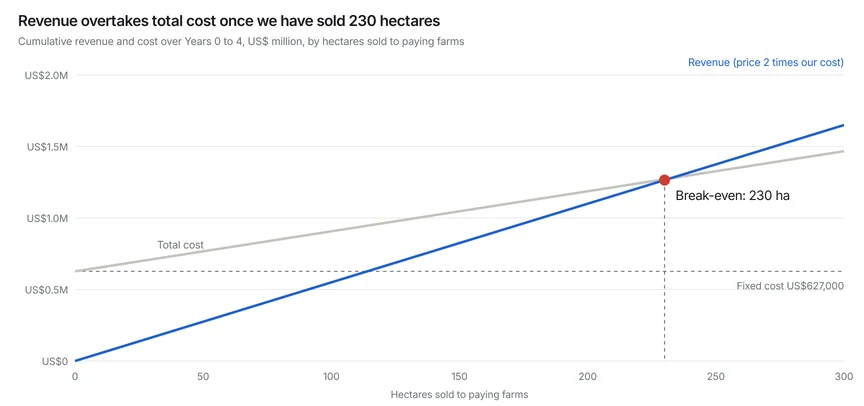
Investors or farmers can use the business model calculator to determine initial costs of our product for their own scale of farm and scenario.
Growth plan
Under the growth plan, cumulative cash bottoms out at -US$196,000 in Year 1 and turns positive in Year 4. The plan sells 20 paying hectares in Year 1, before field results exist.
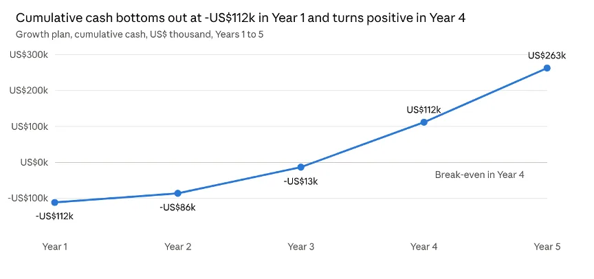
Growth plan
Year 0
Year 1
Year 2
Year 3
Year 4
Year 5
Paying hectares sold
0 (build year)
20 (+4 free pilot)
50
80
100
120
Team size
3
3
4
4
5
5
Refill cartridges sold
0
24
67
127
189
252
Fixed cost (US$)
147,000
94,000
120,000
120,000
147,000
147,000
Profit before fixed cost (US$)
0
44,000
139,000
223,000
280,000
338,000
Cumulative cash (US$)
-147,000
-196,000
-177,000
-74,000
60,000
251,000
Return for investors
If we hit the growth plan, investors who fund the US$196,000 low point get 2.3 times their money back by Year 5, an internal rate of return (IRR) of 24%.
Measure (Year 0 to Year 5, no resale value)
Growth plan
Conservative case
Funding needed (US$)
196,000
236,000
IRR before tax
24%
-7%
IRR after 20% tax (estimate)
21%
-7%
Money back by Year 5, before tax
2.3 times
0.7 times
Money back by Year 5, after tax
2.0 times
0.7 times
Break-even year
Year 4
Year 6
Payback, counted from Year 1
3.6 years
Not within 5 years
Payback, counted from Year 0
4.6 years
Not within 5 years
Net present value (NPV) at 10% discount rate (US$)
111,000
-109,000
NPV at 25% discount rate (US$)
-4,000
-146,000
The IRR includes the Year 0 build-year cost. Money back = (funding + cumulative cash in Year 5) ÷ funding. The 20% tax rate and loss carry-forward are unconfirmed.
Summary
To cover Years 0 to 4 fixed cost of about US$627,000 we must sell about 226 ha to paying farms, at roughly US$2,775 per hectare of contribution toward fixed costs and profit.
Package: about US$5,550 in Year 1 (2 times our cost) and US$90 a year for refills.
Growth plan: break-even in Year 4, peak funding about US$196,000, IRR 24% before tax (21% after a 20% tax estimate), 2.3 times money back by Year 5.
Conservative case (70% of planned hectares): break-even in Year 6, funding about US$236,000, IRR about -7%.
Main risks: the complete system has not yet been validated on the target commercial crop under field conditions, and the farmer must save about US$1,900 a year to pay back in 3 years.
Regulations
Taiwan presents a unique regulatory opportunity forming the foundation of our Phase 1 strategy. Taiwan has stringent restrictions against Living Modified Organisms (LMOs) and GMO field releases under the Ministry of Agriculture (MOA) and Animal and Plant Health Inspection Agency (APHIA). However, Taiwan’s regulatory framework contains a critical pathway: “if engineered bacteria never leave the sealed device, the system can be classified as ‘contained-use’ equipment rather than an environmental release of GMOs” (APHIA).
ReLEAF’s system is fundamentally cell-free delivery: non-living metabolic byproducts (protective proteins) are discharged into soil, not viable Bacillus subtilis cells. The engineered bacteria remain physically confined via the hollow-fiber membrane. By legally proving “absolute containment” to APHIA and MOA, we bypass the restrictive environmental-release framework and pursue a streamlined contained-use approval pathway.
Biosafety validation standards
Escape-frequency assays, hollow-fiber membrane integrity testing, physical housing durability testing, and field trial protocols demonstrating no environmental bacterial release during pilot deployment with 20–50 devices are all ways that we can prove the validity of our biosafety. We will partner with government-recognized testing units such as Taiwan Agricultural Research Institute (TARI) and Tainan District Agricultural Research & Extension Station to verify containment and provide the aforementioned regulatory credibility.
Organic farming and genetically modified organism (GMO) concerns
Organic farming presents another consideration for ReLEAF’s implementation onto the market, because organic certification standards strictly ban GMO usage, which makes farmers hesitant to use our product, even if the protectants produced already exist in plants, as the protectants are produced by a GMO.
We attempt to address GMO concerns through physical containment in our bioreactor, where a hollow-fiber membrane keeps our B. subtilis inside the production compartment and permits only our protectants to pass through. Despite that, we also understand that organic farmers are still unlikely to be our customers.
The distinction is particularly important across ReLEAF’s planned markets. Taiwan’s Organic Agriculture Promotion Act restricts GMOs and their products in organic production. Another example is the fact that the United States Department of Agriculture’s National Organic Program also excludes genetic engineering methods from organic production. In these markets, using a cell-free formulation may not overcome restrictions associated with the engineered production process. In the Philippines and Thailand, ReLEAF must likewise assess the relevant national organic standards and permitted-input requirements rather than assume that cell-free delivery guarantees eligibility.
For this reason, ReLEAF will initially prioritize sustainable and conventional agricultural markets and not approach organic farmers for regulatory concerns. Where necessary, ReLEAF will seek written determinations from, or consult, the competent authorities and organic certification bodies before making claims about suitability for certified organic farms.
Regulatory work approval timeline
ReLEAF will pursue a phased regulatory strategy, beginning with containment validation and product classification in Taiwan before expanding into the Philippines and other international markets. The market expansion order is as follows: Taiwan → Philippines → Thailand → United States → European Union. The following table shows how the regulatory approval planning aligns with our product development plan.
Development phase
Regulatory work
Milestone
Phase 0iGEM project development, Dec 2025 to Nov 2026
Desk review of the three components across eight markets, with an industry briefing from CH Biotech on the competent authorities in Taiwan, the EU and the US. Lab work stays inside iGEM’s safety rules, which limit high school teams to Whitelist organisms, so gray mold is not tested this year and BoPep4 is claimed only for salinity tolerance.
Laws and Regulations analysis published; claims fixed to abiotic stress
Phase 1soil testing and safety, Nov 2026 to Oct 2027
Classification consultations with the Agriculture and Food Agency and APHIA. Membrane retention and escape-frequency testing with a government-recognized institution such as the Taiwan Agricultural Research Institute or the Tainan District Agricultural Research and Extension Station.
Written answers on product category and contained-use status
Phase 2Taiwan pilot, Oct 2027 to Oct 2030
Submit the registration dossier: composition, stability, efficacy, safety. Run pilot trials only under the authorizations those answers require.
Registration decision; pilot data for the dossier
Phase 3Philippine preparation, Oct 2030 onward
Consult the Fertilizer and Pesticide Authority (FPA) on classification, which names genetically modified organisms inside its fertilizer system (Fertilizer and Pesticide Authority, 2018), and the Department of Science and Technology (DOST) Biosafety Committee on importing and using the culture (Department of Science and Technology Biosafety Committee, n.d.). Appoint a licensed local importer and an FPA-accredited researcher.
Thailand and Indonesia. The United States and European Union come later: the US needs both federal and state clearance (U.S. Environmental Protection Agency, n.d.), and in the EU our engineered B. subtilis falls outside the four microbe groups permitted for microbial biostimulants, though the cell-free output may fit the non-microbial category PFC 6(B) (European Parliament and Council of the European Union, 2019).
—
ReLEAF will be pushing to expand to other Southeast Asian markets as well as the United States of America or the European Union market as mentioned in the Future Expansions of Laws and Regulations page.
Membrane’s molecular-weight cutoff could be miscalibrated, damaged during handling, or degraded over device’s operational lifetime, allowing whole Bacillus subtilis cells (0.5–4 micrometers) to pass into the environment.
Mitigation
Experimentally validate membrane cutoff against Bacillus subtilis cell size under multiple conditions and accelerated degradation testing under simulated field conditions (temperature cycling, moisture exposure, mechanical stress). Build membrane integrity checks into formal maintenance and replacement schedules. Conduct simple visual/functional tests monthly with farmers or extension officers.
Physical containment breach
ProbabilityLow
ImpactHigh (most direct pathway to uncontrolled environmental release)
Description
Sealed bioreactor housing could crack, degrade, or be damaged during handling, transport, or extended field use, exposing internal bacterial compartment directly to soil.
Mitigation
Stress-test housing for durability under realistic field conditions (moisture, temperature cycling, mechanical handling, soil microbes). Design bioreactor compartment to show visible proof of tampering or breach so any integrity failure is immediately detectable. Emphasize in farmer training and maintenance protocols that damaged devices must be returned to collection points. Redundancy with genetic and membrane containment means single breach alone is unlikely to cause bacterial escape.
Farmer distrust of unfamiliar technology
ProbabilityMedium
ImpactMedium (slower early market penetration)
Description
Farmers accustomed to familiar chemical sprays may distrust sealed biological devices, especially if technology seems difficult to understand or maintain. Slow adoption in the pilot phase could limit early market traction.
Mitigation
Clear, farmer-centric messaging avoiding overly technical language. Emphasize practical benefits: fewer spray days, reduced crop loss during heat/wet seasons, decreased daily field monitoring labor. Prioritize pilot deployments with progressive agricultural cooperatives and extension offices interested in precision agriculture and IoT systems. Generate local testimonials and case studies before broader sales.
Slow adoption by cooperatives and extension networks
Cooperatives, NGOs, and government agricultural extension offices may be cautious about adopting novel agricultural inputs without long-term, multi-season evidence.
Mitigation
Prioritize institutions already oriented toward innovation. Design pilot trials as small, tightly controlled, outcome-focused engagements with clear success metrics: measurable crop-loss reduction, documented decrease in fungicide spray events, farmer satisfaction above defined thresholds. Deliver tangible, documented wins in first season to build credibility for longer-term scaling.
Production cost exceeds farmer budget
ProbabilityMedium
ImpactHigh (severely limits market penetration and farmer affordability)
Description
Unit cost of bioreactor device, cartridges, hollow-fiber membranes, and bacterial culture may become prohibitively expensive, limiting adoption among smallholder farmers even if technology is effective.
Mitigation
Comprehensive financial sensitivity analysis testing whether ReLEAF remains viable if production costs are 20% higher or selling prices are 20% lower. If direct farmer purchase is unaffordable, pivot to alternative business models: cooperative purchasing (multiple farmers share device ownership), NGO bulk purchase and subsidized distribution, seasonal rental models, or cartridge subscription systems. These flexible approaches ensure cost barriers do not prevent technology adoption.
Organic agriculture represents a potential market for agricultural technologies, but organic certification standards regulate not only the composition of agricultural products but, in some jurisdictions, the methods used to manufacture them. ReLEAF produces protective proteins and peptides using genetically engineered Bacillus subtilis inside a contained bioreactor. Although the system is designed to retain viable production bacteria behind a 0.2 μm hollow-fiber membrane and deliver a cell-free output, this design does not automatically establish eligibility for certified organic agriculture.
Regulatory overview by target market
Taiwan: The Organic Agriculture Promotion Act restricts genetically modified organisms and their products in organic production. ReLEAF must clarify whether its proteins produced using engineered bacteria qualify as prohibited GMO-derived products or can be accepted under the applicable input requirements.
Philippines: Organic agriculture is governed by Republic Act No. 10068, as amended by Republic Act No. 11511, and applicable Philippine National Standards. The eligibility of ReLEAF's cell-free formulation and engineered manufacturing process requires confirmation with the relevant authorities and certification bodies.
Thailand: The national organic agriculture standard, TAS 9000-2564, establishes requirements for organic production and permitted inputs. ReLEAF must determine whether the production method and final formulation satisfy the applicable restrictions.
United States: USDA National Organic Program rules exclude genetic engineering methods from organic production. The use of engineered microorganisms to manufacture the active proteins could therefore prevent organic eligibility even if viable cells are absent from the final product.
European Union: Regulation (EU) 2018/848 explicitly restricts GMOs and products produced from or by GMOs in organic production. Because ReLEAF's protective proteins are manufactured using engineered bacteria, this represents a substantial potential barrier to organic-market entry.
Mitigation
Prioritize conventional agricultural markets initially. ReLEAF will focus on farmers and agricultural partners whose applicable product-registration requirements can be met without relying on organic certification. Conventional market authorization will be pursued separately from any organic-use claim.
Obtain country-specific regulatory determinations. Consult the relevant agricultural authorities and accredited organic certification bodies in the planned market-entry sequence: Taiwan, the Philippines, Thailand, the United States, the European Union.
Maintain comprehensive product and manufacturing documentation. Generate evidence of viable-cell retention, membrane integrity, residual genetic material, product composition, and manufacturing controls. These data support biosafety and quality assessments but do not override restrictions on GMO-derived products.
Investigate organic-compatible alternatives. Where commercially justified, assess alternative production methods or formulations that may satisfy relevant organic standards. Any proposed alternative must be evaluated independently rather than assumed to resolve the regulatory barrier.
Avoid unsupported organic claims. ReLEAF will not advertise its product as suitable for certified organic farming until the applicable requirements have been confirmed and satisfied.
Strategic rationale: ReLEAF is not initially targeting certified organic farms because the regulatory status of agricultural inputs manufactured using genetically engineered microorganisms remains a significant market-access uncertainty, particularly in Taiwan, the United States, and the European Union. Focusing first on conventional agriculture allows ReLEAF to validate product efficacy, demonstrate containment, establish production economics, and build farmer confidence without making commercial viability dependent on organic-input approval. Organic agriculture remains a potential future market, subject to country-specific regulatory review and certification eligibility.
Frequently asked questions
How does ReLEAF work?
A sensor in your field sends data to our AIoT system, which also forecasts upcoming stress. When stress is detected or forecast, the system uses optogenetic (light) control to trigger our engineered B. subtilis to produce the protectant. The protectant passes through a membrane that keeps the bacteria inside the bioreactor, so only the protectant reaches your crop.
Which crops is ReLEAF best for?
ReLEAF is not tied to one crop. Published work on our three types of protectant covers wheat (LEA; Yang et al., 2022), wheat, maize, rice, pea and tomato (ACC deaminase; Shahid et al., 2023) and broccoli (BoPep4; Wang et al., 2022). Most of this work tests salt tolerance, and none of it uses our product. We test on the model plant Arabidopsis because the iGEM rules only allow us to work with it.
What stress does it protect against?
ReLEAF targets heat, salinity and biotic stress (pathogenic infection), which are among the biggest causes of crop loss worldwide. We have run experiments on both heat and salinity in Arabidopsis. See our Plant page for the results.
How many bioreactors and sensors do I need?
About 2 bioreactors per hectare (1 for up to 0.5 ha), plus 1 sensor per crop type. Denser crops need more bioreactors. Our online calculator works it out for your farm.
What does ReLEAF cost?
A 1 L bioreactor costs about US$2,277 (NT$72,200), a moisture sensor about US$125 (NT$4,000), and a refill cartridge about US$90 (NT$2,840). A typical 1 ha farm growing 3 crop types needs 2 bioreactors, 3 sensors and 1 cartridge a year. It pays about US$5,531 (NT$175,400) in the first year, including freight, set-up visits and warranty, and then about US$90 (NT$2,840) a year for refills. These are planning estimates, not quotes.
Is it safe for my soil?
Our bacteria stay sealed inside the bioreactor, and only the protectant reaches your crop and soil. A hollow fiber membrane filters out the bacteria, a droplet sensor detects any liquid that spills inside the bioreactor, and a pressure sensor keeps the pressure constant so the membrane does not break. From the hardware page, it shows that our bacteria does not leak out from the bioreactor.
Has it been tested on a farm?
Not yet. We have lab results only: the enzyme is active, and treated Arabidopsis recovered better from heat and salinity stress. Our first field data will come from four pilot farms.
How is it different from biofertilizers?
Biofertilizers feed or boost plants on a schedule. ReLEAF protects against stress, and a field sensor tells you when to spray.
How often do I refill or replace parts?
About 1 cartridge a year. The bioreactor and sensor are one-time purchases.
How much work is it, and do I need special skills?
You replace a cartridge about once a year, and apply the protectant to your crop about 9 times in a 4-month tomato season depending on the frequency of stress events happened. We are exploring connecting the system to the irrigation system so spraying is automatic. If you have a drone, you can dilute the protectant according to our guideline and spray with it.
Can I use it on an organic farm?
No. Organic farms cannot use engineered bacteria or their products, even when the bacteria are sealed inside the bioreactor. Taiwan's Organic Agriculture Promotion Act defines organic farming as not using genetically modified organisms and their products (Organic Agriculture Promotion Act, 2018, Art. 3), and bars operators from using inputs that contain genetically modified products (Organic Agriculture Promotion Act, 2018, Art. 15).
ReLEAF represents a transformative approach to agricultural resilience in the face of accelerating climate change. By combining optogenetic control, on-site biomanufacturing, cell-free delivery, and modular design, we address a critical gap in current agricultural technology: the need for adaptive, and sustainable crop protection that responds to real-time stress rather than relying on reactive, broad-spectrum chemical spraying.
One of the main goals of our business plan is to be able to support small farmers while maintaining a certain level of profit. To do this, we aim to sell to both industrial and small farmers, but employ a variety of different purchase models so that the product is more accessible. For example, groups of farmers can collectively purchase a bioreactor, farmers can rent a bioreactor for test periods, or receive subsidies from the government/our company for the first few months of purchase in order to decide if our bioreactor is worth the long-term investment.
A large part of what makes this product possible is containment. Because the bacteria stays inside the device and only cell-free output reaches the soil, ReLEAF can be assessed as contained use instead of environmental GMO release, and the output can be positioned as a plant biostimulant. In Taiwan, that distinction means one step closer to ReLEAF’s validation as a fertilizer.
Another important aspect of developing our business plan was talking to farmers. Ms. Chen pushed back on whether supporting plants externally stops them from building their own resilience. Mr. Lu pointed out that a bioreactor not connected to irrigation puts the collection work back on the farmer. Director Wu found gaps in our cost calculations. Those conversations are the reason we are able to push back on so many weaknesses to create a more credible pathway for accurate analysis of our product.
Ultimately, ReLEAF’s mission extends far beyond improving agricultural productivity. We aim to support the livelihoods of climate-vulnerable farming communities, stabilize seasonal farm incomes, prevent climate-driven debt cycles, preserve ancestral land assets, and make sustainable agriculture viable for future generations. By shifting from reactive chemical management to proactive, precision crop defense, we aim to reduce environmental contamination, protect soil microbiomes, and help establish agricultural systems that are resilient, adaptive, and sustainable for decades to come.
The full business plan is linked below. It covers everything on the entrepreneurship page in more depth. Much of its substance came from consulting experts in the field, including professors, agricultural researchers, biotech companies, distributors, and farmers across both conventional and organic practices, who shaped how we approached pricing, adoption, regulation, and the limitations of our design. Several of the weaknesses we identify came directly from experts who challenged our assumptions. Our main results come from laboratory experiments we have conducted throughout the year.
Fertilizer and Pesticide Authority. (2018, July 13). Memorandum Circular No. 2018-20: General information and guideline on product registration of bio-stimulants, microbial inoculants, genetically modified organisms and decomposers. fpa.da.gov.ph/issuances/memorandum-circulars/
European Parliament and Council of the European Union. (2019). Regulation (EU) 2019/1009 of the European Parliament and of the Council of 5 June 2019 laying down rules on the making available on the market of EU fertilising products, amending Regulations (EC) No 1069/2009 and (EC) No 1107/2009, and repealing Regulation (EC) No 2003/2003. Official Journal of the European Union, L 170, 1–114. eur-lex.europa.eu/eli/reg/2019/1009/oj
European Parliament & Council of the European Union. (2018). Regulation (EU) 2018/848 of the European Parliament and of the Council of 30 May 2018 on organic production and labelling of organic products and repealing Council Regulation (EC) No 834/2007. Official Journal of the European Union, L 150, 1–92. eur-lex.europa.eu/eli/reg/2018/848/oj
National Bureau of Agricultural Commodity and Food Standards. (2021). TAS 9000-2564: Organic agriculture: The production, processing, labelling and marketing of organically produce and products. Ministry of Agriculture and Cooperatives, Thailand. tas2go.acfs.go.th/app/standard.php?id=442
Shahid, M., Singh, U. B., Khan, M. S., Singh, P., Kumar, R., Singh, R. N., Kumar, A., & Singh, H. V. (2023). Bacterial ACC deaminase: Insights into enzymology, biochemistry, genetics, and potential role in amelioration of environmental stress in crop plants. Frontiers in Microbiology, 14, Article 1132770. doi:10.3389/fmicb.2023.1132770
Wang, A., Guo, J., Wang, S., Zhang, Y., Lu, F., Duan, J., Liu, Z., & Ji, W. (2022). BoPEP4, a C-terminally encoded plant elicitor peptide from broccoli, plays a role in salinity stress tolerance. International Journal of Molecular Sciences, 23(6), Article 3090. doi:10.3390/ijms23063090
Yang, Z., Mu, Y., Wang, Y., He, F., Shi, L., Fang, Z., Zhang, J., Zhang, Q., Geng, G., & Zhang, S. (2022). Characterization of a novel TtLEA2 gene from Tritipyrum and its transformation in wheat to enhance salt tolerance. Frontiers in Plant Science, 13, Article 830848. doi:10.3389/fpls.2022.830848
Sato, S., Peet, M. M., & Thomas, J. F. (2000). Physiological factors limit fruit set of tomato (Lycopersicon esculentum Mill.) under chronic, mild heat stress. Plant, Cell & Environment, 23(7), 719–726. doi:10.1046/j.1365-3040.2000.00589.x
Tainan District Agricultural Research and Extension Station. (2012). Xiǎo guǒ fānqié de yánfā yǔ tuīguǎng [Development and promotion of small-fruit tomato]. Táinán Qū Nóngyè Zhuānxùn, (79). kmweb.moa.gov.tw/subject/subject.php?id=32544
![A labelled diagram of the bioreactor. A pink B. subtilis pathway runs from a magnetically stirred culture bottle with a pH probe and an air filter, through a pump, a flow meter and an inline photometer, up past pressure transducers into a hollow fiber membrane, then on through a pinch valve and a feeding Luer valve, where a second pump draws KOH from an external feeding bottle, and back to the culture bottle. A blue protectant pathway leaves the shell side of the hollow fiber membrane through a shell Luer valve and a pressure transducer, and runs to the output bottle.](../assets/img/entrepreneurship/mvp-bioreactor-v2.webp)
![A four-panel diagram titled Application Method. Predictive AIoT plus local sensor: a leaf humidity sensor on a leaf monitors moisture in real time and anticipates stress. Bioreactor activates: when stress is detected the bioreactor produces the bioprotectants and dilutes them with water. Apply to fields: the protectant is applied to the crop at the concentration for that crop. Farmer consults ReLEAF app: real-time updates, predictions and guidance. Footer: on-site, on-demand bioprotectants and sensing.](../assets/img/entrepreneurship/application-method-v2.webp)

![A SWOT graphic with four boxes around a central SWOT Analysis tile. Strengths: modular multi-chamber bioreactor, cell-free delivery, sensor-driven automation, bioreactor stored indoors, price advantage. Weakness: bioreactor reliability risks, not fully organic, cartridge maintenance costs, unreliable sensors, limited responsiveness. Opportunities: rapid market growth, climate-driven demand, regulatory tailwinds, institutional support, subsidies. Threats: regulatory ambiguity, adoption resistance, cost-dependent uptake, organic certification limits.](../assets/img/entrepreneurship/swot-v3.webp)
![A six-column PESTEL chart. Political: government policies and restrictions on GMO usage; potential for green-tech grants and agricultural subsidies. Economic: high fertilizer and pesticide prices driving demand for alternatives; global supply chain delays affecting chemical delivery. Social: public perception and acceptance of GMOs; transition toward eco-friendly farming. Technological: rapid advances in AI forecasting and optogenetic tools; standardized manufacturing for hardware and sensors. Environmental: severe climate change threats such as droughts, heat and fungal outbreaks; the global push to meet UN SDGs 2, 8, 11, 12, 13 and 15. Legal: environmental release and biosafety laws; regulatory compliance for engineered biological products in food.](../assets/img/entrepreneurship/pestel-v2.webp)
![A stakeholder map with interest of stakeholder on the vertical axis and influence of stakeholder on the horizontal. Keep completely informed: CH Biotech and agricultural distributors. Manage most thoroughly: industrial farms including Yes Health iFarm, small-scale farmers both sustainable and conventional, and professors, experts and researchers. Regular minimal contact: Agritalk, schools and students, general public. Anticipate and meet needs: government regulations, government organizations such as the Agricultural Research and Extension Station, the Department of Agricultural Science and Technology and the Taiwan Agricultural Research Institute, the World Vegetable Center and Academia Sinica ABRC.](../assets/img/entrepreneurship/stakeholder-map-v2.webp)